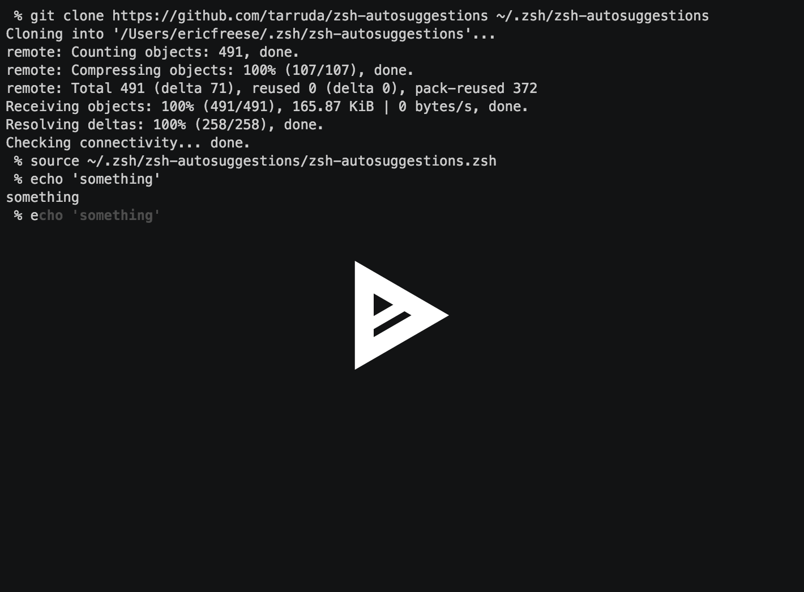

Hello World
CodeTengu Weekly 碼天狗週刊
CodeTengu Weekly 會在 GMT+8 時區的每個禮拜一早上 10:00 出刊，每一期會從目前的 curator 名單中選出三位來負責當期的內容，每一位 curator 各自負責不同的領域，如果你在這一期沒有看到自已感興趣的東西，說不定下一期就會有了。
你也可以瀏覽一下前幾期的內容，有價值的東西是不會過時的。
以下是目前的 curator 陣容：
- @vinta - I failed the Turing Test - 楊威利腦殘粉
- @saiday - Imnotyourson - 捷運飲食推廣委員會
- @tzangms - Oceanic / 人生海海 - 衝動型購物
- @fukuball - ImFukuball - 機器學習好難
- @wancw
- @adamp33 - 看棒球才是正職，副業是前端工程師
- @mingderwang
- @kako0507 - 熱愛嘗試新事物的前端工程師
- @chiahsien - Nelson
大家也可以 follow 一下 CodeTengu 的 Facebook、Twitter 或 GitHub，有很多 Weekly 看不到的內容。有任何建議或疑問也可以來 Gitter 聊一聊，歡迎亂入 👺
 @vinta
@vinta
React 入门实例教程
雖然團隊裡有專職的前端工程師，但是為了讓 co-work 和 code review 能夠更順利，看樣子終究還是躲不了得學一下 React.js 吶，不然人活得好好的，為什麼要去寫 JavaScript 呢？總之就是這個禮拜正在入門 React，看了幾篇文章，剛好跟大家分享一下。太久沒有寫前端，有超多知識要補的啊。
忍不住要說一下，第一次看到那個 Hot Module Replacement 的功能時，差點都要尿褲子了。
延伸閱讀：
- react-howto - 作者曾經是 React 核心開發者之一
- Thinking in React
- React Webpack cookbook
channels: Developer-friendly asynchrony for Django
Django Channels 是 @andrewgodwin（Django 的核心開發者之一，也是 South 的作者）的新專案，目的是讓 Django 能夠原生地支援 WebSocket 和 HTTP/2 server push，看起來有點令人期待啊。
延伸閱讀：
HTTP/2 For Web Developers
雖然之前就分享過 Short read: How is HTTP/2 different? Should we still minify and concatenate?，但是這一篇 CloudFlare blog 上的文章寫得更完整。
Defensive Programming 防禦性程式設計
Defensive Programming 簡單說就是指你為了確保程式在各種可預期和不可預期的情況下都不會出錯，額外做的那些檢查或處理。很多時候，Defensive Programming 是有必要的，尤其是在面對（惡意的）使用者輸入時。但是重點是你不應該濫用它（把所有的錯誤都隱藏起來），有些時候你就是得 Fail Fast，讓錯誤及早地暴露出來。
就我自己的經驗，如果你的 API（廣義的 API，可以是 RESTful API、library 或 public methods 等）是要給其他的 developers 使用，當你在輸入的參數裡檢測到錯誤時，你應該要丟出一個 exception 告訴調用的人錯在哪裡，而不是偷偷地幫他 fall back 成某個默認值。
如果你寫的那些 code 的唯一使用者就是你自己和你的同事，而且也不會牽涉到一般使用者的輸入，那我會說你乾脆也不用檢查了，調用的人如果輸入了非預期的參數，他自己在執行的時候就會遇到問題。而且因為他就看得到 source code 啊幹，所以他當然也應該自己找出正確的參數應該是什麼。不過，如果你的程式老是讓別人誤用，那你其實應該要考慮一下重構啦。
最後跟大家分享一下所謂的 Conway's law（康威定律），感受一下：
Any organization that designs a system will produce a design whose structure is a copy of the organization's communication structure.
延伸閱讀：

zsh-autosuggestions: Fish-like autosuggestions for zsh
是一個 zsh 的指令自動補完外掛，特別的是它會在你正在輸入的游標之後直接顯示建議的指令（根據你以前輸入過的指令），用起來很爽啊！雖然剛開始用的時候，會覺得怎麼一直有東西在那邊閃來閃去。
延伸閱讀：
 @kako0507
@kako0507
ReactJS lifecycle chart
React 有良好的 lifecycle methods， 在需要手動處理 DOM 時非常方便，可以保證 DOM 一定存在，或是在資料更新時做對應的處理，透過這個 lifecycle chart 可以更清楚的了解 lifecycle 運作流程。
Using Webworkers to make React faster
這篇文章探討將 React 的 DOM reconciliations (資料改變後自動運算 DOM 變化的過程，使得 API 非常的簡單，用起來就像是每次都重新 render 整個 Component 。) 過程放到 Web worker 上執行的結果，在資料較少的狀態下，因為需要在 UI thread 和 worker thread 傳輸的原因，在速度上並沒有什麼好處，但在需要 render 足夠大量的資訊時會有較快的效能。
Functional Refactoring in JavaScript
在撰寫 JavaScript 時，可以利用一些 functional programing 的概念來增加 readability 或減少需要重複書寫的 code ，本篇文章會利用包裝紙盒的例子來做 Functional 重構，不過筆者一開始就先說明在這個例子裡這樣做是矯枉過正的，這個例子是為了盡可能的轉換成 functional pure expression ，並不會看到 readability 的好處。
CSS Variables: Why Should You Care?
CSS4 非正式標準 - CSS Variables 終於在 Chrome 49 支援了， Developer 也可以在原生 css 裡寫出類似 LESS, SASS 的效果，不過還是有很多功能需要改進，像是 nesting 和 mixins 就尚未支援，且在意瀏覽器支援度的開發者，可能就要再等上幾年了。
Why I Left Gulp and Grunt for npm Scripts
Gulp 用較簡單的 streaming 方式管理 Node.js task ，因而取代 Grunt 的地位，不過因為 Gulp 和 Grunt 這類的 task 管理上有以下幾個缺點，建議使用 npm 的 script 取代即可。
- 必須依賴 Plugin 的作者，很可能無法即時跟上 Library 更新
- 因為 Gulp 與 Grunt plugin 屬於另外附加的一層 code ，比較難去檢查是哪個環節出錯了
- 讀懂所需 tool 的文件是不夠的，常常還需要了解 Gulp 和 Grunt plugin 的設定方式
 @chiahsien
@chiahsien
iOS 憑證顯示 "無效的簽發者" 解決方案
在情人節的時候，有一張 Apple 的憑證過期了，因為是突如其來的，所以很多開發者一時之間被搞得焦頭爛額。這篇文章是一個開發者解決憑證問題的心 (ㄒㄧㄝ ˇ) 得 (ㄌㄟˋ)，值得參考。
Issue and Pull Request templates
前一陣子一群人寫了一封公開信給 GitHub，最近 GitHub 對其中的一些問題做出了回應，這就是他們的答案：幫 issue 跟 pull request 設計樣板。
- 它的命名必須是
ISSUE_TEMPLATE或PULL_REQUEST_TEMPLATE - 它不需要有副檔名，不過它支援 Markdown (.md) 語法
- 如果你覺得把檔案放在根目錄很亂的話，你可以在根目錄建立一個
.github資料夾，然後放在這裡面
我覺得這個功能超棒的，這樣一來在公司內部就可以統一 pull request 的格式了！更多詳細資料可以參考官方文件。
The Right Way To Write a Singleton
Singleton 其實就是一種全域變數，雖然大家都知道全域變數是不好的，應該盡可能避免，但有的時候就是無可避免會用到它。Objective-C 發展那麼久了，早就有一套公認最佳的創建 singleton 的寫法，那 Swift 呢？這篇文章列出了多組常見的寫法，並且說明哪個寫法最好。
Transitioning From Objective C to Swift in 4 Steps – Without Rewriting The Existing Code
就算 Swift 還在快速變動中，還是阻擋不了一堆工程師前仆後繼的投入這個新語言的懷抱，誰叫工程師都是喜歡新玩具的呢～ Skyscanner 的工程師們跟大家分享了如何透過四個循序漸進的步驟，在使用 Objective-C 寫的專案裡頭一步步的加入 Swift，並分享轉成 Swift 之後所帶來的好處。
Otaku is the New Sexy
「巷弄間的謎走大叔」三次元系列總整理
我發現長久以來，大家都誤用了「大叔」這個詞，好像只要超過三十歲、有鬍子或長得老、喜歡軟妹子、穿 POLO 衫會立領、有玩過紅白機、使用有刻字的陶杯、周身有股老人臭的男性都被泛稱為「大叔」。身為「熟成男生產履歷」(雖然很久沒更新了) 的編撰者，我必須在這邊提出鄭重的抗議，「大叔」可不是躺在那裡長肉就可以當的！「大叔」，是對一個男人熟成後的恭維，是為個性獨樹一格的男人頒發的勳章，除此之外的三十歲以上男性就只是三十歲以上的男性而已，請不要稱之為「大叔」，從今天起請稱他們為 "搭載 Y 染色體的容器"。今天我們就來介紹五個在日本各地謎走的大叔，然後首圖的北野 武其實沒有在裡面，我只是拿來當門神用用而已 XD。
/// 日劇篇
- 謎走式壹－孤傲的胃袋疾走 《孤獨的美食家》
松重 豐主演，漫畫改編，獨身主義的饕客，行走距離不到五百公尺就必須餵食的 SOHO 族
如果是模擬市民豈不是被煩死，用豪邁的吃相抓住 "專枯" (以大叔為食的人) 的心。 - 謎走式貮－自宅花草保育區巡警 《植物男子陽台星人》
田口 智朗主演，獨身主義的自宅警備隊，老實說我覺得這傢伙很麻煩，是那種讓人不想深交的文青大叔，尤其是那件翻領針織衫、黑框眼鏡和永澤頭的搭配彷彿強調一種不願意服從歲月的叛逆，大叔就穿得像大叔就好了嘛！
- 謎走式叁－ 萬年備胎之一路被甩到掛《東京傷情故事》
吉田 鋼太郎主演，常看日劇的人應該認識他，幾乎都演大魔王或幕後黑手之類的角色，但在這齣
東京景點置入性行銷的日劇中一直不停地被甩，而且每集客串的都是段數很高的熟女，老是讓他請客，再給他嚐一點甜頭之後就提出自己的要求然後閃人 XD，腦海裡一直浮現龐克馬莎告白失敗的那一次軟式 globe 啊哈哈！ - 謎走式肆－ 刑警辦案式料理偵探《鴨川食堂》
萩原 健一主演，小說改編，場地在京都，前刑警兼主廚幫您找出記憶中的味道順便給你講一個加洋蔥的故事，聽說京都人特別喜歡午間偵探劇，這部片怎麼看都有一種說不出來的玫瑰瞳鈴眼氣息，然後萩原桑實在很有魄力。
/// 日劇 SP 篇
- 謎走式伍－ 泥棒 (小偷) 式尋貓怪客《貓和凶相大叔》
田中 要次主演，有沒有發現這些在田野間謎走的大叔都要掛一臺徠卡在身上，據說這樣可以用來區別可疑人士和時尚雅痞，但田中桑怎麼掛都。很。可。疑！即使抱著喵星人，還。是。很。可。疑！
/// 大叔的胚胎特別推薦
- 走鐘王－真的在人生的道路上謎走了《山田孝之の東京都北區赤羽》
山田 孝之主演，相關作品是清野 徹的紀實漫畫《東京都北区赤羽》，這個故事就是說呢，山田桑他有一天在拍戲的時候發現必須真的殺了自己，否則無法演下去，劇組發現阻止不了他，於是乎全體休兵讓他回家休息，而喜歡漫畫的他突然發現自己很嚮往清野先生筆下的生活，於是毅然決然的搬去赤羽，跟漫畫裡的其他人物生活在一起然後被罵來罵去
這麼中二當然會被罵阿，最後發現自己果然還是最喜歡演戲溜～ 結果和赤羽的大家用一場幼稚園程度的話劇展現回鍋的決心邀請了許多業界人士來看然後大家都很關心他的精神狀態，本劇終。
最後推薦一個我很喜歡的日劇評論家豬大劇評可以毒舌，待人必要親和。
以上來自 @autisticcat 的分享！